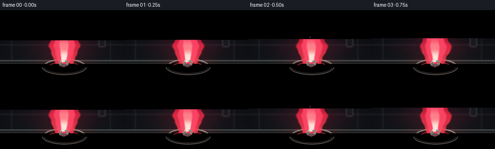
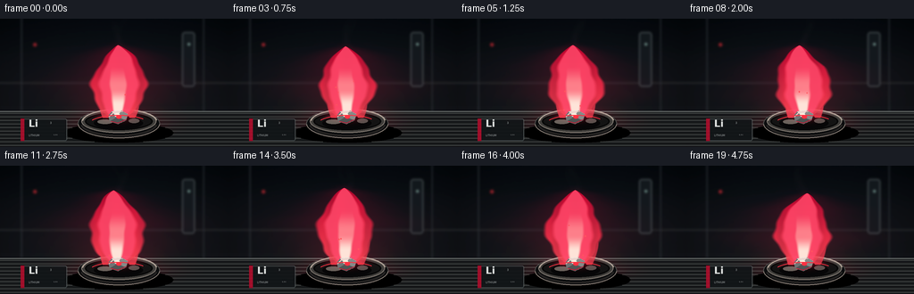
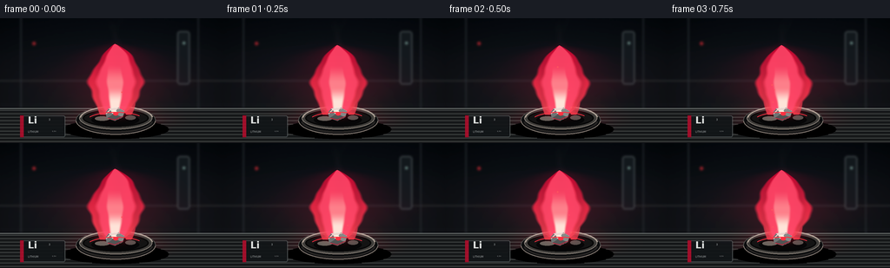
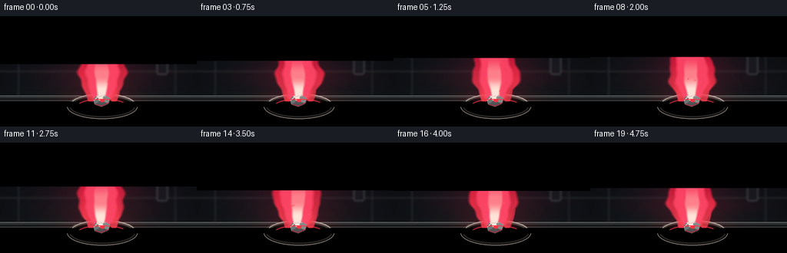
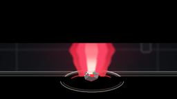

CODING AGENTS AS PIXEL WORLD MODELS
traex/GPT-5.6-Sol · phygen_128
点击播放 · 原生 RGB 像素
逐轮保存的候选
回放视频、检查图与代码变化。
每份候选均可单独播放。实际图片检查记录在下方工具轨迹中。
候选 01播放与检查图
点击播放 · 原生 RGB 像素


展开代码变化
--- 上一保存版本
+++ 本次保存版本
@@ -0,0 +1,275 @@
+from pathlib import Path
+import math
+import numpy as np
+from PIL import Image, ImageDraw, ImageFont, ImageFilter
+import artifact_io
+
+# Procedural close-up of a lithium sample burning with its characteristic crimson flame.
+W, H, N, FPS = 256, 144, 20, 4.0
+S = 3
+WW, HH = W*S, H*S
+rng = np.random.default_rng(128)
+
+# Supersampled coordinate grids, expressed in final-pixel units.
+yy, xx = np.mgrid[0:HH, 0:WW].astype(np.float32)
+xx /= S
+yy /= S
+
+# Fixed fine texture, used very lightly to avoid a sterile flat render.
+noise = rng.normal(0.0, 1.0, (HH, WW)).astype(np.float32)
+noise2 = rng.normal(0.0, 1.0, (HH, WW)).astype(np.float32)
+
+font_path = "/usr/share/fonts/truetype/dejavu/DejaVuSans.ttf"
+font_bold_path = "/usr/share/fonts/truetype/dejavu/DejaVuSans-Bold.ttf"
+try:
+ f_li = ImageFont.truetype(font_bold_path, 11*S)
+ f_small = ImageFont.truetype(font_path, 3*S)
+ f_micro = ImageFont.truetype(font_path, 2*S)
+except Exception:
+ f_li = f_small = f_micro = ImageFont.load_default()
+
+
+def over(base, color, alpha):
+ """Alpha-composite a constant or per-pixel RGB color onto float RGB base."""
+ a = np.clip(alpha, 0.0, 1.0)[..., None]
+ c = np.asarray(color, np.float32)
+ if c.ndim == 1:
+ c = c[None, None, :]
+ return base * (1.0-a) + c * a
+
+
+def screen_glow(base, color, strength):
+ """Soft emissive blend that preserves luminous highlights."""
+ s = np.clip(strength, 0.0, 1.0)[..., None]
+ c = np.asarray(color, np.float32)[None, None, :] / 255.0
+ b = np.clip(base/255.0, 0, 1)
+ return 255.0 * (1.0 - (1.0-b)*(1.0-c*s))
+
+
+def softstep(edge0, edge1, v):
+ z = np.clip((v-edge0)/(edge1-edge0), 0, 1)
+ return z*z*(3-2*z)
+
+
+def background(frame):
+ # Dark blue-black laboratory backdrop, with a shallow-depth-of-field bench.
+ top = np.array([7, 11, 16], np.float32)
+ bottom = np.array([24, 27, 29], np.float32)
+ grad = np.clip(yy/145.0, 0, 1)[..., None]
+ arr = top*(1-grad) + bottom*grad
+
+ # Dim tiled wall panels and vignette.
+ arr += 2.3*np.exp(-((yy-55)/45)**2)[...,None]
+ vignette = np.clip(((xx-128)/160)**2 + ((yy-69)/112)**2, 0, 1)[...,None]
+ arr *= 1.0 - .43*vignette
+ arr += noise[...,None]*0.65
+
+ im = Image.fromarray(np.uint8(np.clip(arr,0,255)), 'RGB').convert('RGBA')
+ d = ImageDraw.Draw(im, 'RGBA')
+ # Out-of-focus vertical lab supports and tile seams.
+ d.line([(24*S,0),(24*S,103*S)], fill=(43,49,54,45), width=S)
+ d.line([(228*S,0),(228*S,105*S)], fill=(40,45,50,38), width=S)
+ d.line([(0,72*S),(WW,72*S)], fill=(45,48,49,28), width=S)
+ d.rounded_rectangle((204*S,15*S,218*S,76*S), radius=3*S,
+ fill=(18,23,27,75), outline=(76,84,87,30), width=S)
+ # Soft distant indicator lights/bokeh.
+ d.ellipse((37*S,27*S,41*S,31*S), fill=(135,31,38,24))
+ d.ellipse((210*S,27*S,213*S,30*S), fill=(100,128,124,20))
+ im = im.filter(ImageFilter.GaussianBlur(1.25*S))
+
+ # Bench remains comparatively crisp.
+ d = ImageDraw.Draw(im, 'RGBA')
+ d.rectangle((0,104*S,WW,HH), fill=(21,23,24,242))
+ d.line([(0,104*S),(WW,104*S)], fill=(105,111,109,38), width=S)
+ for y in range(106*S, HH, 4*S):
+ a = max(2, 11-int((y/S-106)/5))
+ d.line([(0,y),(WW,y)], fill=(125,130,126,a), width=1)
+ return im.convert('RGB')
+
+
+def draw_scene_objects(im, frame):
+ # Red light cast by the flame across the benchtop.
+ arr = np.asarray(im).astype(np.float32)
+ pool = np.exp(-(((xx-132)/63)**2 + ((yy-116)/14)**2)*1.7) * (yy>98)
+ arr = screen_glow(arr, (168, 5, 24), .34*pool)
+ im = Image.fromarray(np.uint8(np.clip(arr,0,255)), 'RGB').convert('RGBA')
+ d = ImageDraw.Draw(im, 'RGBA')
+
+ # Soft grounding shadow.
+ d.ellipse((72*S,117*S,194*S,139*S), fill=(0,0,0,128))
+ d.ellipse((89*S,121*S,178*S,135*S), fill=(0,0,0,125))
+
+ # Matte black combustion dish: rear outer body, rim, then inner well.
+ d.ellipse((87*S,101*S,179*S,134*S), fill=(10,11,12,255), outline=(72,70,68,155), width=S)
+ d.ellipse((91*S,102*S,175*S,128*S), fill=(58,56,53,255), outline=(124,116,108,180), width=S)
+ d.ellipse((95*S,105*S,171*S,125*S), fill=(17,17,17,255), outline=(7,7,7,255), width=2*S)
+ d.arc((92*S,101*S,176*S,130*S), 184, 353, fill=(188,170,157,78), width=S)
+ # Char and lithium salts in the well.
+ d.ellipse((105*S,110*S,160*S,124*S), fill=(5,5,6,220))
+ d.ellipse((109*S,113*S,126*S,118*S), fill=(99,93,87,58))
+ d.ellipse((144*S,112*S,156*S,117*S), fill=(85,75,72,45))
+
+ # Angled sample card in the lower left anchors the chemistry identity.
+ card = Image.new('RGBA',(WW,HH),(0,0,0,0)); cd=ImageDraw.Draw(card,'RGBA')
+ cd.rounded_rectangle((23*S,112*S,75*S,137*S), radius=2*S,
+ fill=(16,19,21,238), outline=(101,109,110,130), width=S)
+ cd.rectangle((23*S,112*S,27*S,137*S), fill=(174,12,41,225))
+ cd.text((32*S,111*S),'Li',font=f_li,fill=(238,241,239,240),stroke_width=0)
+ cd.text((56*S,115*S),'3',font=f_small,fill=(169,177,177,220))
+ cd.text((32*S,129*S),'LITHIUM',font=f_small,fill=(161,168,168,220))
+ cd.text((60*S,129*S),'6.94',font=f_micro,fill=(116,123,124,185))
+ # Perspective is subtle; slight blur makes it sit naturally in depth.
+ card = card.filter(ImageFilter.GaussianBlur(.12*S))
+ im = Image.alpha_composite(im,card)
+ return im.convert('RGB')
+
+
+def smoke_layer(frame):
+ # Fine lithium-oxide vapor curling above the red plume, behind the flame.
+ layer = Image.new('RGBA',(WW,HH),(0,0,0,0))
+ d = ImageDraw.Draw(layer,'RGBA')
+ ph = frame*0.34
+ for j in range(3):
+ pts=[]
+ for k in range(24):
+ u=k/23
+ y=(44 - 42*u - j*2)*S
+ x=(132 + 4.8*math.sin(5.1*u+ph+j*1.7) + 7*u*math.sin(ph*.57+j))*S
+ pts.append((x,y))
+ d.line(pts,fill=(167,146,152,max(0,24-j*6)),width=max(1,(3-j)*S))
+ return layer.filter(ImageFilter.GaussianBlur(3.2*S))
+
+
+def flame_fields(frame):
+ # Several coherent envelopes make a stable but continuously breathing flame.
+ t = frame / FPS
+ phase = 2*math.pi*frame/N
+ base = 111.0
+ tip = 28.5 + 2.4*math.sin(phase*1.13) + 1.5*math.sin(phase*2.37+0.7)
+ den = base-tip
+ s = (base-yy)/den # 0 at fuel, 1 at tip
+ valid = (s>=0)&(s<=1)
+ center = (132.0 + 4.2*np.sin(3.25*s + phase*.62)*(s**1.15)
+ + 1.7*np.sin(9.1*s-phase*1.18)*s)
+ width = (6.2*(1-s) + 30.0*np.maximum(0,np.sin(np.pi*s))**.70*(1-.20*s))
+ # Slow boundary undulation: enough motion to read as fire without flicker cuts.
+ width *= 1 + .055*np.sin(16*s + phase*1.35) + .025*np.sin(31*s-phase*.71)
+ q = np.abs(xx-center)/np.maximum(width, .6)
+ body = softstep(1.09,.91,q)*valid
+
+ # Side tongues which remain attached to the main flame.
+ tongues=[]
+ specs=[(-1, 48+4*math.sin(phase+.5), 118, 5.2, .4),
+ ( 1, 58+5*math.sin(phase*1.2+2.0), 148, 5.8, 2.1)]
+ for side, st_tip, xbase, w0, off in specs:
+ ss=(base-yy)/(base-st_tip)
+ ok=(ss>=0)&(ss<=1)
+ cc=xbase + side*(4*ss + 2.8*np.sin(4*ss+phase*.8+off)*ss)
+ ww=3.1*(1-ss)+w0*np.sin(np.pi*ss)**.72
+ qq=np.abs(xx-cc)/np.maximum(ww,.45)
+ tongues.append(softstep(1.08,.84,qq)*ok)
+ body=np.maximum(body, .88*tongues[0])
+ body=np.maximum(body, .83*tongues[1])
+
+ # Wide emissive aura around the dominant central plume.
+ halo_vertical = softstep(-.08,.06,s)*softstep(1.07,.92,s)
+ halo = np.exp(-.5*(np.abs(xx-center)/(width*1.17+7.0))**2)*halo_vertical
+ halo *= .72 + .06*np.sin(phase+yy*.17)
+
+ mid = softstep(.79,.59,q)*valid
+ # Core is concentrated at the fuel and falls away by mid-height.
+ core_width=np.maximum(width*.34,1.2)
+ qc=np.abs(xx-(131.5+1.0*np.sin(phase+5*s)))/core_width
+ core=softstep(1.02,.67,qc)*valid*softstep(.72,.44,s)
+ whitecore=softstep(.92,.52,qc)*valid*softstep(.40,.18,s)
+ return body, halo, mid, core, whitecore, s
+
+
+def render_flame(im, frame):
+ arr=np.asarray(im).astype(np.float32)
+ body,halo,mid,core,whitecore,s=flame_fields(frame)
+ # Diffuse crimson corona first.
+ arr=screen_glow(arr,(176,0,35),.29*halo)
+ arr=screen_glow(arr,(255,5,46),.10*halo*body)
+
+ # A height-dependent saturated body: crimson top, pink-red lower flame.
+ low=np.array([255,63,79],np.float32); high=np.array([190,3,43],np.float32)
+ sf=np.clip(s,0,1)[...,None]
+ body_color=low*(1-sf)+high*sf
+ alpha=np.clip(.90*body + .07*body*np.sin(xx*.31+frame*.47),0,1)
+ arr=over(arr,body_color,alpha)
+ arr=over(arr,(255,30,62),.77*mid)
+ arr=screen_glow(arr,(255,74,91),.48*mid)
+ arr=over(arr,(255,141,145),.77*core)
+ arr=over(arr,(255,239,224),.89*whitecore)
+
+ # Bright red base glow, exactly where metal and flame meet.
+ baseglow=np.exp(-(((xx-132)/17)**2+((yy-108)/7.2)**2)*1.2)
+ arr=screen_glow(arr,(255,31,49),.34*baseglow)
+ return Image.fromarray(np.uint8(np.clip(arr,0,255)),'RGB')
+
+
+def foreground_details(im, frame):
+ im=im.convert('RGBA'); d=ImageDraw.Draw(im,'RGBA')
+ ph=2*math.pi*frame/N
+ # Irregular lithium piece, freshly cut silver facets with oxidized edges.
+ poly=[(121,109),(125,104),(136,103),(143,107),(141,114),(132,118),(123,115)]
+ P=[(x*S,y*S) for x,y in poly]
+ d.polygon(P,fill=(164,168,166,255),outline=(222,219,210,225))
+ d.polygon([(121*S,109*S),(125*S,104*S),(131*S,110*S),(123*S,115*S)],fill=(105,111,111,245))
+ d.polygon([(125*S,104*S),(136*S,103*S),(131*S,110*S)],fill=(224,225,216,250))
+ d.polygon([(131*S,110*S),(136*S,103*S),(143*S,107*S),(141*S,114*S)],fill=(128,132,130,248))
+ d.polygon([(123*S,115*S),(131*S,110*S),(141*S,114*S),(132*S,118*S)],fill=(76,79,79,248))
+ # Hot crust and reflected lithium-red fire.
+ d.line([(122*S,110*S),(127*S,105*S),(137*S,104*S)],fill=(255,193,189,210),width=S)
+ d.line([(124*S,115*S),(132*S,117*S),(141*S,113*S)],fill=(198,18,45,220),width=S)
+ d.ellipse((128*S,106*S,134*S,110*S),fill=(255,235,218,210))
+ d.ellipse((130*S,108*S,136*S,112*S),fill=(255,46,61,110))
+
+ # Front rim overlays the sample very slightly, improving depth.
+ d.arc((87*S,101*S,179*S,134*S),3,177,fill=(133,122,114,125),width=S)
+ d.arc((90*S,103*S,176*S,132*S),7,172,fill=(34,32,31,235),width=2*S)
+
+ # A few coherent incandescent motes rise; never enough to suggest an explosion.
+ prng=np.random.default_rng(900)
+ for i in range(10):
+ birth=prng.uniform(0,5)
+ life=prng.uniform(.9,1.8)
+ age=((frame/FPS-birth)%5.0)
+ if age<life:
+ x0=prng.uniform(119,146); drift=prng.uniform(-7,7)
+ x=x0+drift*(age/life)+2*math.sin(i+age*4)
+ y=105-prng.uniform(22,47)*(age/life)-5*(age/life)**2
+ a=int(220*(1-age/life)); r=prng.choice([.45,.6,.8])*S
+ d.ellipse((x*S-r,y*S-r,x*S+r,y*S+r),fill=(255,80,89,a))
+
+ # Tiny specular accents on dish catch the flicker.
+ a=int(60+25*math.sin(ph+1.1))
+ d.arc((100*S,108*S,166*S,127*S),205,326,fill=(248,43,59,a),width=S)
+ return im.convert('RGB')
+
+
+def make_frame(i):
+ im=background(i)
+ im=draw_scene_objects(im,i)
+ # vapor behind emissive flame
+ rgba=im.convert('RGBA')
+ rgba=Image.alpha_composite(rgba,smoke_layer(i))
+ im=rgba.convert('RGB')
+ im=render_flame(im,i)
+ im=foreground_details(im,i)
+ # Downsample supersampled render for clean antialiasing and a filmic finish.
+ im=im.resize((W,H),Image.Resampling.LANCZOS)
+ arr=np.asarray(im).astype(np.float32)
+ # Very gentle contrast curve.
+ arr=(arr/255.0)**.94*255.0
+ return np.uint8(np.clip(arr,0,255))
+
+
+def main():
+ frames=np.stack([make_frame(i) for i in range(N)],axis=0)
+ artifact_io.save(frames,Path(__file__).resolve().parent)
+ print('saved',frames.shape,frames.dtype,'range',frames.min(),frames.max())
+
+if __name__=='__main__':
+ main()
候选 02播放与检查图
点击播放 · 原生 RGB 像素


展开代码变化
--- 上一保存版本
+++ 本次保存版本
@@ -149,8 +149,11 @@
den = base-tip
s = (base-yy)/den # 0 at fuel, 1 at tip
valid = (s>=0)&(s<=1)
- center = (132.0 + 4.2*np.sin(3.25*s + phase*.62)*(s**1.15)
- + 1.7*np.sin(9.1*s-phase*1.18)*s)
+ # Clip before fractional powers. The field is evaluated over the entire
+ # canvas (including below the fuel), so this also keeps all pixels finite.
+ sp = np.clip(s, 0.0, 1.0)
+ center = (132.0 + 4.2*np.sin(3.25*s + phase*.62)*(sp**1.15)
+ + 1.7*np.sin(9.1*s-phase*1.18)*sp)
width = (6.2*(1-s) + 30.0*np.maximum(0,np.sin(np.pi*s))**.70*(1-.20*s))
# Slow boundary undulation: enough motion to read as fire without flicker cuts.
width *= 1 + .055*np.sin(16*s + phase*1.35) + .025*np.sin(31*s-phase*.71)
@@ -165,7 +168,8 @@
ss=(base-yy)/(base-st_tip)
ok=(ss>=0)&(ss<=1)
cc=xbase + side*(4*ss + 2.8*np.sin(4*ss+phase*.8+off)*ss)
- ww=3.1*(1-ss)+w0*np.sin(np.pi*ss)**.72
+ ssp=np.clip(ss,0.0,1.0)
+ ww=3.1*(1-ssp)+w0*np.maximum(0.0,np.sin(np.pi*ssp))**.72
qq=np.abs(xx-cc)/np.maximum(ww,.45)
tongues.append(softstep(1.08,.84,qq)*ok)
body=np.maximum(body, .88*tongues[0])
可观测工具轨迹
实际执行的命令与返回图片。
命令 1exit 0
/bin/bash -lc "cat prompt.txt && printf '\\n---RULES---\\n' && cat GENERATION_RULES.md && printf '\\n---SPEC---\\n' && cat task_spec.json"
命令 2exit 1
/bin/bash -lc "find . -maxdepth 2 -type f -printf '%p\\n' | sort && printf '\\nTOOLS\\n' && command -v ffmpeg && command -v python3 && python3 - <<'PY' mods=['numpy','PIL','cv2','imageio','cairo','moviepy'] for m in mods: try: x=__import__(m); print(m,'OK',getattr(x,'__version__','')) except Exception as e: print(m,'NO',e) PY"
命令 3exit 0
/bin/bash -lc 'cat artifact_io.py'
命令 4exit 0
/bin/bash -lc 'for x in python3 ffmpeg convert; do printf "$x: "; command -v "$x" || true; done; python3 - <<'"'PY' mods=['numpy','PIL','cv2','imageio','cairo','moviepy'] for m in mods: try: x=__import__(m); print(m,'OK',getattr(x,'__version__','')) except Exception as e: print(m,'NO',type(e).__name__,e) PY"
命令 5exit 0
/bin/bash -lc "cat > generate.py <<'PY'
from pathlib import Path
import math
import numpy as np
from PIL import Image, ImageDraw, ImageFont, ImageFilter
import artifact_io
# Procedural close-up of a lithium sample burning with its characteristic crimson flame.
W, H, N, FPS = 256, 144, 20, 4.0
S = 3
WW, HH = W*S, H*S
rng = np.random.default_rng(128)
# Supersampled coordinate grids, expressed in final-pixel units.
yy, xx = np.mgrid[0:HH, 0:WW].astype(np.float32)
xx /= S
yy /= S
# Fixed fine texture, used very lightly to avoid a sterile flat render.
noise = rng.normal(0.0, 1.0, (HH, WW)).astype(np.float32)
noise2 = rng.normal(0.0, 1.0, (HH, WW)).astype(np.float32)
font_path = \"/usr/share/fonts/truetype/dejavu/DejaVuSans.ttf\"
font_bold_path = \"/usr/share/fonts/truetype/dejavu/DejaVuSans-Bold.ttf\"
try:
f_li = ImageFont.truetype(font_bold_path, 11*S)
f_small = ImageFont.truetype(font_path, 3*S)
f_micro = ImageFont.truetype(font_path, 2*S)
except Exception:
f_li = f_small = f_micro = ImageFont.load_default()
def over(base, color, alpha):
\"\"\"Alpha-composite a constant or per-pixel RGB color onto float RGB base.\"\"\"
a = np.clip(alpha, 0.0, 1.0)[..., None]
c = np.asarray(color, np.float32)
if c.ndim == 1:
c = c[None, None, :]
return base * (1.0-a) + c * a
def screen_glow(base, color, strength):
\"\"\"Soft emissive blend that preserves luminous highlights.\"\"\"
s = np.clip(strength, 0.0, 1.0)[..., None]
c = np.asarray(color, np.float32)[None, None, :] / 255.0
b = np.clip(base/255.0, 0, 1)
return 255.0 * (1.0 - (1.0-b)*(1.0-c*s))
def softstep(edge0, edge1, v):
z = np.clip((v-edge0)/(edge1-edge0), 0, 1)
return z*z*(3-2*z)
def background(frame):
# Dark blue-black laboratory backdrop, with a shallow-depth-of-field bench.
top = np.array([7, 11, 16], np.float32)
bottom = np.array([24, 27, 29], np.float32)
grad = np.clip(yy/145.0, 0, 1)[..., None]
arr = top*(1-grad) + bottom*grad
# Dim tiled wall panels and vignette.
arr += 2.3*np.exp(-((yy-55)/45)**2)[...,None]
vignette = np.clip(((xx-128)/160)**2 + ((yy-69)/112)**2, 0, 1)[...,None]
arr *= 1.0 - .43*vignette
arr += noise[...,None]*0.65
im = Image.fromarray(np.uint8(np.clip(arr,0,255)), 'RGB').convert('RGBA')
d = ImageDraw.Draw(im, 'RGBA')
# Out-of-focus vertical lab supports and tile seams.
d.line([(24*S,0),(24*S,103*S)], fill=(43,49,54,45), width=S)
d.line([(228*S,0),(228*S,105*S)], fill=(40,45,50,38), width=S)
d.line([(0,72*S),(WW,72*S)], fill=(45,48,49,28), width=S)
d.rounded_rectangle((204*S,15*S,218*S,76*S), radius=3*S,
fill=(18,23,27,75), outline=(76,84,87,30), width=S)
# Soft distant indicator lights/bokeh.
d.ellipse((37*S,27*S,41*S,31*S), fill=(135,31,38,24))
d.ellipse((210*S,27*S,213*S,30*S), fill=(100,128,124,20))
im = im.filter(ImageFilter.GaussianBlur(1.25*S))
# Bench remains comparatively crisp.
d = ImageDraw.Draw(im, 'RGBA')
d.rectangle((0,104*S,WW,HH), fill=(21,23,24,242))
d.line([(0,104*S),(WW,104*S)], fill=(105,111,109,38), width=S)
for y in range(106*S, HH, 4*S):
a = max(2, 11-int((y/S-106)/5))
d.line([(0,y),(WW,y)], fill=(125,130,126,a), width=1)
return im.convert('RGB')
def draw_scene_objects(im, frame):
# Red light cast by the flame across the benchtop.
arr = np.asarray(im).astype(np.float32)
pool = np.exp(-(((xx-132)/63)**2 + ((yy-116)/14)**2)*1.7) * (yy>98)
arr = screen_glow(arr, (168, 5, 24), .34*pool)
im = Image.fromarray(np.uint8(np.clip(arr,0,255)), 'RGB').convert('RGBA')
d = ImageDraw.Draw(im, 'RGBA')
# Soft grounding shadow.
d.ellipse((72*S,117*S,194*S,139*S), fill=(0,0,0,128))
d.ellipse((89*S,121*S,178*S,135*S), fill=(0,0,0,125))
# Matte black combustion dish: rear outer body, rim, then inner well.
d.ellipse((87*S,101*S,179*S,134*S), fill=(10,11,12,255), outline=(72,70,68,155), width=S)
d.ellipse((91*S,102*S,175*S,128*S), fill=(58,56,53,255), outline=(124,116,108,180), width=S)
d.ellipse((95*S,105*S,171*S,125*S), fill=(17,17,17,255), outline=(7,7,7,255), width=2*S)
d.arc((92*S,101*S,176*S,130*S), 184, 353, fill=(188,170,157,78), width=S)
# Char and lithium salts in the well.
d.ellipse((105*S,110*S,160*S,124*S), fill=(5,5,6,220))
d.ellipse((109*S,113*S,126*S,118*S), fill=(99,93,87,58))
d.ellipse((144*S,112*S,156*S,117*S), fill=(85,75,72,45))
# Angled sample card in the lower left anchors the chemistry identity.
card = Image.new('RGBA',(WW,HH),(0,0,0,0)); cd=ImageDraw.Draw(card,'RGBA')
cd.rounded_rectangle((23*S,112*S,75*S,137*S), radius=2*S,
fill=(16,19,21,238), outline=(101,109,110,130), width=S)
cd.rectangle((23*S,112*S,27*S,137*S), fill=(174,12,41,225))
cd.text((32*S,111*S),'Li',font=f_li,fill=(238,241,239,240),stroke_width=0)
cd.text((56*S,115*S),'3',font=f_small,fill=(169,177,177,220))
cd.text((32*S,129*S),'LITHIUM',font=f_small,fill=(161,168,168,220))
cd.text((60*S,129*S),'6.94',font=f_micro,fill=(116,123,124,185))
# Perspective is subtle; slight blur makes it sit naturally in depth.
card = card.filter(ImageFilter.GaussianBlur(.12*S))
im = Image.alpha_composite(im,card)
return im.convert('RGB')
def smoke_layer(frame):
# Fine lithium-oxide vapor curling above the red plume, behind the flame.
layer = Image.new('RGBA',(WW,HH),(0,0,0,0))
d = ImageDraw.Draw(layer,'RGBA')
ph = frame*0.34
for j in range(3):
pts=[]
for k in range(24):
u=k/23
y=(44 - 42*u - j*2)*S
x=(132 + 4.8*math.sin(5.1*u+ph+j*1.7) + 7*u*math.sin(ph*.57+j))*S
pts.append((x,y))
d.line(pts,fill=(167,146,152,max(0,24-j*6)),width=max(1,(3-j)*S))
return layer.filter(ImageFilter.GaussianBlur(3.2*S))
def flame_fields(frame):
# Several coherent envelopes make a stable but continuously breathing flame.
t = frame / FPS
phase = 2*math.pi*frame/N
base = 111.0
tip = 28.5 + 2.4*math.sin(phase*1.13) + 1.5*math.sin(phase*2.37+0.7)
den = base-tip
s = (base-yy)/den # 0 at fuel, 1 at tip
valid = (s>=0)&(s<=1)
center = (132.0 + 4.2*np.sin(3.25*s + phase*.62)*(s**1.15)
+ 1.7*np.sin(9.1*s-phase*1.18)*s)
width = (6.2*(1-s) + 30.0*np.maximum(0,np.sin(np.pi*s))**.70*(1-.20*s))
# Slow boundary undulation: enough motion to read as fire without flicker cuts.
width *= 1 + .055*np.sin(16*s + phase*1.35) + .025*np.sin(31*s-phase*.71)
q = np.abs(xx-center)/np.maximum(width, .6)
body = softstep(1.09,.91,q)*valid
# Side tongues which remain attached to the main flame.
tongues=[]
specs=[(-1, 48+4*math.sin(phase+.5), 118, 5.2, .4),
( 1, 58+5*math.sin(phase*1.2+2.0), 148, 5.8, 2.1)]
for side, st_tip, xbase, w0, off in specs:
ss=(base-yy)/(base-st_tip)
ok=(ss>=0)&(ss<=1)
cc=xbase + side*(4*ss + 2.8*np.sin(4*ss+phase*.8+off)*ss)
ww=3.1*(1-ss)+w0*np.sin(np.pi*ss)**.72
qq=np.abs(xx-cc)/np.maximum(ww,.45)
tongues.append(softstep(1.08,.84,qq)*ok)
body=np.maximum(body, .88*tongues[0])
body=np.maximum(body, .83*tongues[1])
# Wide emissive aura around the dominant central plume.
halo_vertical = softstep(-.08,.06,s)*softstep(1.07,.92,s)
halo = np.exp(-.5*(np.abs(xx-center)/(width*1.17+7.0))**2)*halo_vertical
halo *= .72 + .06*np.sin(phase+yy*.17)
mid = softstep(.79,.59,q)*valid
# Core is concentrated at the fuel and falls away by mid-height.
core_width=np.maximum(width*.34,1.2)
qc=np.abs(xx-(131.5+1.0*np.sin(phase+5*s)))/core_width
core=softstep(1.02,.67,qc)*valid*softstep(.72,.44,s)
whitecore=softstep(.92,.52,qc)*valid*softstep(.40,.18,s)
return body, halo, mid, core, whitecore, s
def render_flame(im, frame):
arr=np.asarray(im).astype(np.float32)
body,halo,mid,core,whitecore,s=flame_fields(frame)
# Diffuse crimson corona first.
arr=screen_glow(arr,(176,0,35),.29*halo)
arr=screen_glow(arr,(255,5,46),.10*halo*body)
# A height-dependent saturated body: crimson top, pink-red lower flame.
low=np.array([255,63,79],np.float32); high=np.array([190,3,43],np.float32)
sf=np.clip(s,0,1)[...,None]
body_color=low*(1-sf)+high*sf
alpha=np.clip(.90*body + .07*body*np.sin(xx*.31+frame*.47),0,1)
arr=over(arr,body_color,alpha)
arr=over(arr,(255,30,62),.77*mid)
arr=screen_glow(arr,(255,74,91),.48*mid)
arr=over(arr,(255,141,145),.77*core)
arr=over(arr,(255,239,224),.89*whitecore)
# Bright red base glow, exactly where metal and flame meet.
baseglow=np.exp(-(((xx-132)/17)**2+((yy-108)/7.2)**2)*1.2)
arr=screen_glow(arr,(255,31,49),.34*baseglow)
return Image.fromarray(np.uint8(np.clip(arr,0,255)),'RGB')
def foreground_details(im, frame):
im=im.convert('RGBA'); d=ImageDraw.Draw(im,'RGBA')
ph=2*math.pi*frame/N
# Irregular lithium piece, freshly cut silver facets with oxidized edges.
poly=[(121,109),(125,104),(136,103),(143,107),(141,114),(132,118),(123,115)]
P=[(x*S,y*S) for x,y in poly]
d.polygon(P,fill=(164,168,166,255),outline=(222,219,210,225))
d.polygon([(121*S,109*S),(125*S,104*S),(131*S,110*S),(123*S,115*S)],fill=(105,111,111,245))
d.polygon([(125*S,104*S),(136*S,103*S),(131*S,110*S)],fill=(224,225,216,250))
d.polygon([(131*S,110*S),(136*S,103*S),(143*S,107*S),(141*S,114*S)],fill=(128,132,130,248))
d.polygon([(123*S,115*S),(131*S,110*S),(141*S,114*S),(132*S,118*S)],fill=(76,79,79,248))
# Hot crust and reflected lithium-red fire.
d.line([(122*S,110*S),(127*S,105*S),(137*S,104*S)],fill=(255,193,189,210),width=S)
d.line([(124*S,115*S),(132*S,117*S),(141*S,113*S)],fill=(198,18,45,220),width=S)
d.ellipse((128*S,106*S,134*S,110*S),fill=(255,235,218,210))
d.ellipse((130*S,108*S,136*S,112*S),fill=(255,46,61,110))
# Front rim overlays the sample very slightly, improving depth.
d.arc((87*S,101*S,179*S,134*S),3,177,fill=(133,122,114,125),width=S)
d.arc((90*S,103*S,176*S,132*S),7,172,fill=(34,32,31,235),width=2*S)
# A few coherent incandescent motes rise; never enough to suggest an explosion.
prng=np.random.default_rng(900)
for i in range(10):
birth=prng.uniform(0,5)
life=prng.uniform(.9,1.8)
age=((frame/FPS-birth)%5.0)
if age<life:
x0=prng.uniform(119,146); drift=prng.uniform(-7,7)
x=x0+drift*(age/life)+2*math.sin(i+age*4)
y=105-prng.uniform(22,47)*(age/life)-5*(age/life)**2
a=int(220*(1-age/life)); r=prng.choice([.45,.6,.8])*S
d.ellipse((x*S-r,y*S-r,x*S+r,y*S+r),fill=(255,80,89,a))
# Tiny specular accents on dish catch the flicker.
a=int(60+25*math.sin(ph+1.1))
d.arc((100*S,108*S,166*S,127*S),205,326,fill=(248,43,59,a),width=S)
return im.convert('RGB')
def make_frame(i):
im=background(i)
im=draw_scene_objects(im,i)
# vapor behind emissive flame
rgba=im.convert('RGBA')
rgba=Image.alpha_composite(rgba,smoke_layer(i))
im=rgba.convert('RGB')
im=render_flame(im,i)
im=foreground_details(im,i)
# Downsample supersampled render for clean antialiasing and a filmic finish.
im=im.resize((W,H),Image.Resampling.LANCZOS)
arr=np.asarray(im).astype(np.float32)
# Very gentle contrast curve.
arr=(arr/255.0)**.94*255.0
return np.uint8(np.clip(arr,0,255))
def main():
frames=np.stack([make_frame(i) for i in range(N)],axis=0)
artifact_io.save(frames,Path(__file__).resolve().parent)
print('saved',frames.shape,frames.dtype,'range',frames.min(),frames.max())
if __name__=='__main__':
main()
PY
python3 generate.py"命令 6exit 0
/bin/bash -lc "python3 - <<'PY'
import numpy as np
z=np.load('pixels.npz')['pixels']
print(z.shape,z.dtype)
# Frame mean and changes
p=np.stack([((z[:,:,i]>>16)&255).astype(np.uint8) for i in range(20)])
# complete RGB frame changes
for i in range(1,20):
print(i, np.mean(z[:,:,i]"'!=z[:,:,i-1]), np.mean(np.abs(z[:,:,i].astype(np.int64)-z[:,:,i-1].astype(np.int64))))
PY
ls -lh pixels.npz index.html inspection.png frames/00.png'命令 7exit 0
/bin/bash -lc "python3 generate.py && python3 - <<'PY'
from pathlib import Path
import json, numpy as np
from PIL import Image
spec=json.loads(Path('task_spec.json').read_text())
z=np.load('pixels.npz')['pixels']
assert z.shape==(spec['height'],spec['width'],spec['frames']) and z.dtype==np.uint32
files=sorted(Path('frames').glob('*.png'))
assert len(files)==spec['frames']
for p in files:
im=Image.open(p)
assert im.mode=='RGB' and im.size==(spec['width'],spec['height'])
print('validated RGB artifacts:',len(files),'frames,',spec['fps'],'fps, duration',spec['frames']/spec['fps'],'s')
PY"视觉工具实际返回图片 1

视觉工具实际返回图片 2

保存候选 2 份；完成命令 7 次；可验证图片返回 2 张。原始 API 响应与完整日志保留在本地。